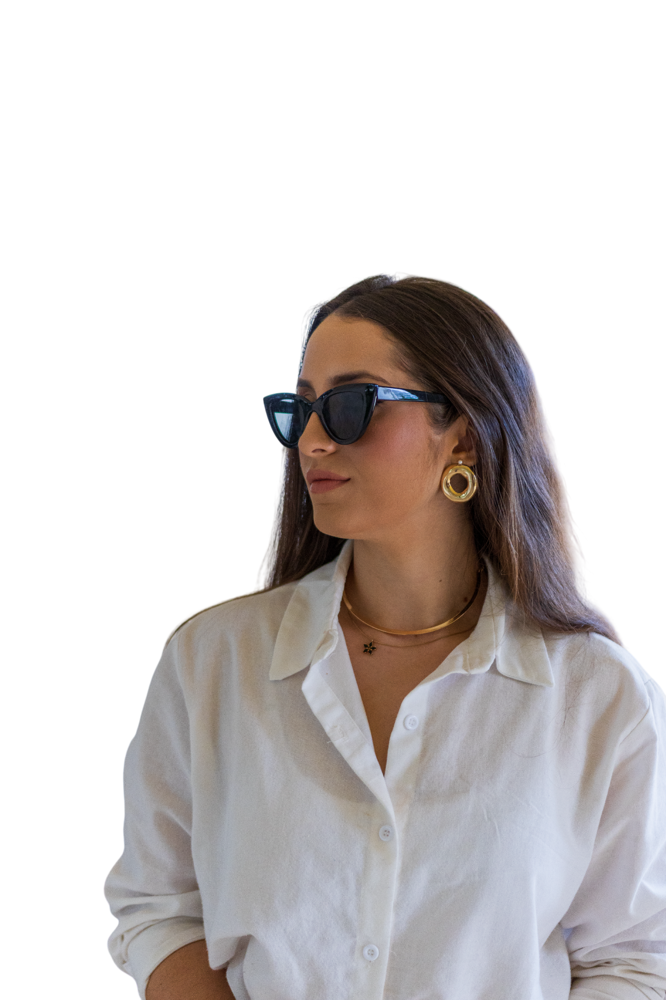

Tarcylla Moura
Gestão Estratégica
Estratégia e comunicação para transformar ideias em posicionamento e resultado.
"Ideias precisam de direção."
Portfólio Completo
Conheça meus projetos e resultados.
Connection Amigos do Turismo
Turismo, conexão e oportunidades.

YouTube
Assista aos meus conteúdos e palestras.

Suporte e Serviços
Tire dúvidas e conheça meus serviços.
Fale Comigo
Vamos entender sua necessidade e construir o próximo passo.
Sobre mim
Estratégia para transformar ideias em negócios bem posicionados, estruturados e reconhecidos. Diretora de Projetos Estratégicos do Connection Amigos do Turismo.
Ver meu portfólio